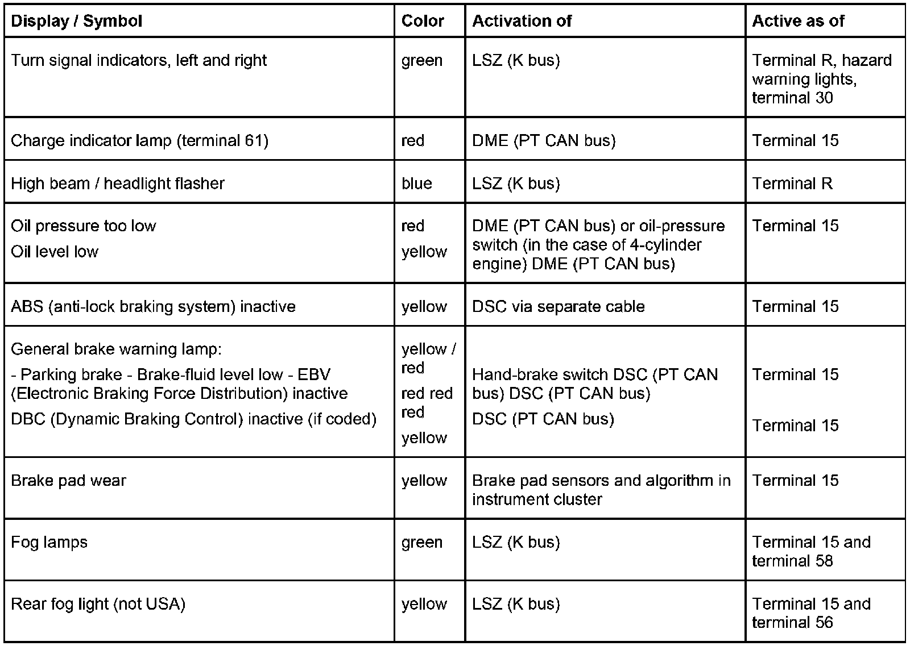
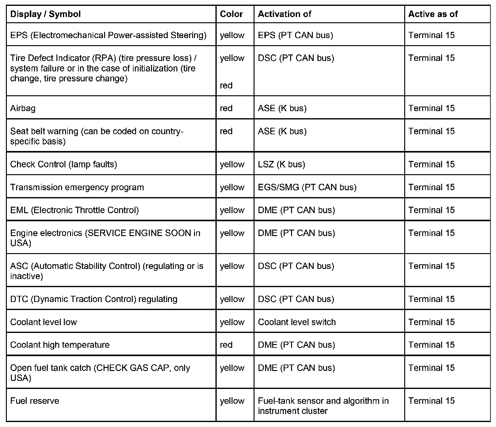

Instrument Cluster Displays and Functions, Part 2
Digital clock
With terminal R On, the first display that appears is the Service Interval Display (SIA) for 5 seconds in display 1. During this period, operations of the axial button in the steering column lever (LSS) for turn indicators are ignored. The time is then displayed. The time can be adjusted using the S/R button and the clock symbol button on the instrument cluster as well as via the on-board computer. A clock that has not been set, e.g. after a longer power interruption of terminal 30, is indicated by dashes with a flashing colon.
As of terminal R, the time is sent on the K bus for display on the Multi Information Radio (MIR) or Central Information Display (CID).
Depending on coding, the time can be displayed in the 12 hour or 24 hour mode. It is changed over by pressing the axial button in the steering-column lever (LSS) for turn indicators for a longer period (> 5 seconds). The 12 hour setting is displayed by activating AM and PM.
Setting the clock with the S/R and clock symbol buttons:
To call up the setting mode:
- press the clock symbol button for longer than 5 seconds. The colon starts to flash and the minute value disappears.
To set the hours:
- Press the S/R button as often as necessary for a correct hour setting:
Pressing briefly: increases by one hour
Extended pressing: increases the hours in 2 speed stages
To set the minutes:
- Press the clock symbol button. Changeover from hour to minute display.
Pressing briefly: increases by one minute
Extended pressing: increases the minutes in 2 speed stages
If the minutes do not need to be changed (e.g. summer/ winter time setting), press the clock symbol button once again.
- Pressing briefly: increases by one minute
Extended pressing: increases the minutes in 2 speed stages
To restart the clock:
- Press the clock symbol button.
The second counter is only restarted if the minute setting was changed beforehand.
Setting the clock via on-board computer:
If the minute setting is changed, the seconds are set to zero.
Manipulation point
The manipulation point is displayed to the left of the trip distance recorder in LC display area 1. It is switched on when a comparison shows that the vehicle identification numbers stored in the instrument cluster and in the lights switching center (LSZ) (redundant data storage) do not match. One cause of this can be replacement of one of these control modules.
- Instrument cluster
- Lights switching center (LSZ)
NOTE: With regard to matching up the vehicle identification numbers (switching off the manipulation point) and replacing control modules, refer to the functional description for the instrument cluster: internal test functions, service interval display (SIA), measures for replacing control modules
Check Control indicator lamp
The Check Control indicator lamp (lamp faults) is described in the functional description of the instrument cluster: internal test functions, service interval display (SIA), measures for replacing control modules
Indicator and warning lamps
The indicator and warning lamps (symbols or lettering) are lit by soldered LEDs. Some LEDs are designed in two colors.


Seat-belt warning (Seat Belt Reminder)
The acoustic seat-belt warning is issued for EU (USA: Seat Belt Reminder) for the driver and passenger's side. It is now possible to issue the seat-belt warning by fitting belt buckles that have so far only been used in US vehicles. In addition, the seat occupation detection (SBE) detects whether the passenger's seat is occupied. After a travel distance of 100 meters or during a trip, the instrument cluster issues an intermittent acoustic warning for a maximum of 90 seconds.
The seatbelt buckle information is transferred by the airbag control module across the K bus to the instrument cluster.
Predrive check
The pre-drive check is described in the functional description of the instrument cluster: internal test functions, service interval display (SIA), measures for replacing control modules
On-board computer functions
The on-board computer function in the instrument cluster can be coded in two versions.
In the low version for on-board computer, only the outside temperature is displayed in LC display area 1. The time is then displayed on the radio display. However, the clock setting is performed using the S/T buttons on the instrument cluster.
In the high version for on-board computer, the individual functions can be called up successively in the coded order. To do so, press the axial button in the steering-column lever (LSS) for turn indicators. The functions are displayed continuously on the LC display, display area 1, or on the Multi Information Radio (MIR) or the Central Information Display (CID).
- Time
- Outside temperature
- Average fuel consumption 1
- Range
- Average speed
- Speed warning (country coding)
- Average fuel consumption 2
- Distance to junction = distance to the next turn-off (only in conjunction with navigation system)
- Date (only in conjunction with Multi Information Radio (MIR) or navigation system on radio display or Central Information Display (CID).
The units of the selected on-board computer functions are shown on the LC display (l/100 km, km/l, mls/gal US or mls/gal UK) according to the coding.
In the case of vehicles without radio, there is no outside temperature display. On such vehicles, only the time is displayed in the bottom line in LC display 1.
The order of the on-board computer functions shown in LC display 1 is always the same.
There is a display combination option of time and outside temperature, depending on the equipment.
NOTE: For vehicles without radio special equipment, there is no outside temperature display in the instrument cluster. Only the time is displayed in the bottom line of LC display 1.
If the outside temperature display is flashing (temperature ≤ 3 degrees C), each on-board computer function currently on display is hidden.
On-board computer displays in LC display area 1
With terminal R On, the on-board computer displays the on-board computer function that was last displayed. Other displays can be called up by briefly pressing (< 2 seconds) the axial button in the steering-column lever (LSS) for turn indicators. Pressing for a longer period (> 2 seconds) enables settings to be made or a reset of the selected computer functions.
The on-board computer functions 'average fuel consumption' and 'average speed' can be reset by briefly pressing (< 2 seconds) the axial button in the steering-column lever (LSS) for turn indicators. The average calculation for both displays is then restarted.
When the limit warning (or speed warning, country versions) is reached, the road-speed value displayed in LC display 1 flashes. A warning tone is issued.
Distance to junction
The distance to the next turnoff is provided to the instrument cluster by the navigation computer via the K bus. The remaining distance display is a staggered representation in LC display 1.
If the vehicle is moving towards a junction, the distance from 400 meter to 100 meters is displayed in 100 meter steps.
As of 100 meters, the distance is then displayed in 10 meter steps.
NOTE: At higher speeds, e.g. on motor ways, the distance information is displayed 1000 m before the junction (Motor way exit).
After the turn has been completed, the previously displayed on-board computer function reappears.
On-board computer displays in the Multi Information Radio (MIR)
On vehicles with Multi Information Radio (MIR), the on-board computer functions are also shown in the radio display. On addition, the on-board computer function 'Average fuel consumption 2' is displayed. The list can be scrolled using the rotary push button. A date display is possible.
Settings made using the rotary push button, such as units or resets, are transmitted by data telegram to the instrument cluster. The values that applied until then are updated.
The date is managed in the instrument cluster and shown in the radio display.
NOTE: Following a power interruption (e.g. battery replacement), the current year stored in the instrument cluster is displayed.
On-board computer displays in the Central Information Display (CID) navigation system
On vehicles with high navigation system, the on-board computer functions are displayed in the Central Information Display (CDI). The navigation information 'Distance to junction' is shown in parallel in the instrument cluster.
Settings made using the rotary push button on the control panel of the navigation system, such as units or resets, are transmitted by data telegram to the instrument cluster. The values that applied until then are updated.
The date can be set using the "Settings" function on the Central Information Display (CDI). However, the date is managed and displayed in the instrument cluster (no status bar in the Central Information Display (CDI)).
Outside temperature display
The outside temperature is recorded by means of a sensor (NTC resistor) in the bumper. The sensor is connected to the power supply of the instrument cluster. The analog voltage value coming from the sensor is digitized in the instrument cluster. Then, depending on the engine temperature and travelling speed, it is processed for the display.
When the outside temperature is displayed, the unit display can be changed. Pressing the axial button in the steering-column lever (LSS) for turn indicators for a longer period (> 5 seconds) switches the unit from degree C to degree F and vice versa.
As of terminal R On, the display can be changed using the axial button in the steering-column lever (LSS) for turn indicators. The order is: time of day, outside temperature, average fuel consumption, cruising range, average vehicle speed. Each time the axial button in the steering-column lever (LSS) for turn indicator is released, a jump is made to the next function.
If the outside temperature falls below +3 degrees C, an acoustic outside-temperature warning is issued. The outside temperature display then flashes for a few seconds. The outside-temperature warning can be cancelled by briefly pressing (< 2 seconds) the axial button in the steering-column lever (LSS) for turn indicators. After the cancellation, the previously displayed on-board computer function reappears.
Depening on the coding, the outside temperature display remains in the display after an outside-temperature warning or the display moves back to the on-board computer function last displayed (e.g. time).
During an SIA display, no outside-temperature warning is displayed.
At temperatures below -5 degrees C, the temperature gauge does not flash at terminal R On. Flashing only begins after running through the display options using the axial button in the steering-column lever (LSS) for turn indicators.
The next outside-temperature warning is possible after +6 degrees C is exceeded and then falls below +3 degrees C once again or terminal R is switched on again.
Car and Key Memory
The car and key memory function are described in the functional description of the instrument cluster: internal test functions, service interval display (SIA), measures for replacing control modules
Program and gear display
LC display area 2 for the program and gear display is located below the indicator and warning lamps between the large pointer instruments. In the case of the automatic transmission version and sequential M-transmission (SMG), the engaged gear and selected transmission program are displayed in LC display area 2. In the event of a fault, the transmission emergency program symbol is displayed in a separate indicator lamp. The display function can be coded. The coded function (without, automatic, SMG) is displayed as of terminal 15 On.
Program mode (left)
M (= manual)
S (= Sport)
D (= automatic mode, only SMG)
F (= fault, only SMG)
Gear (right)
P
R
N
D
1 to 6
The SMG display can also be displayed after terminal 15 R Off as long as the SMG control module transmits information. In addition, the SMG can flash the display and issue an acoustic warning via the PT CAN bus.
In the case of automatic transmission and SMG, the transmission information is transmitted from the transmission control module across the PT CAN bus. The data received by the instrument cluster is displayed as of terminal 15 On. A fault in the transmission or failure of the PT CAN communication triggers display of the transmission emergency program with a separate indicator lamp. The function can be coded. If the message fails, a fault memory entry is made in the instrument cluster.
On manual transmission vehicles, the reverse gear signal is read in via connector pins. In order to enable output of the reversing signal across the K bus also in the case of manual transmissions, there is a digital input for this signal on the instrument cluster. If the instrument cluster is coded for a manual transmission, it reads the information via the input. The current status "Reverse gear engaged" is always provided across the K bus to other equipment attached to the bus such as mirror memory, Park Distance Control (PDC), etc.
NOTE: In the case of SMG, selector-lever position N flashes after the vehicle has been parked. Flashing is the visual indication of the possibility that the vehicle might roll.
Notes for Service department
Test functions: The test functions serve to check the coding and to run troubleshooting without the diagnosis tester. This is described in the functional description of the instrument cluster: internal test functions, service interval display (SIA), measures for replacing control modules
Country-specific version
- EU left-hand drive vehicle for automatic transmission or SMG: scale of the speedometer up to 260 km/h, program and gear display
- EU left-hand drive vehicle for manual transmission: scale of the speedometer up to 260 km/h, no program and gear display
- EU right-hand drive vehicle for automatic transmission or SMG: scale of the speedometer up to 160 mph in outer ring as well as 260 km/h in second inner dial, program and gear display
- EU right-hand drive vehicle for manual transmission: scale of the speedometer up to 160 mph in outer ring as well as 260 km/h in second inner dial, no program and gear display
- USA version for automatic transmission or SMG: scale of the speedometer up to 160 mph in outer ring as well as 260 km/h in second inner dial, program and gear display, and deviating indicator and control lamps (country versions)
- USA version for manual transmission: scale of the speedometer up to 160 mph in outer ring as well as 260 km/h in second inner dial, no program and gear display (country versions)
Country versions
USA: versions of indicator and warning lamps:
- Instead of Check Engine, SERVICE ENGINE SOON is displayed.
- Instead of the ABS symbol, ABS is displayed.
- Instead of the general brake warning light symbol, BRAKE is displayed.
- In addition, CHECK GAS CAP is displayed if the fuel tank catch is open.
- There is no indicator and warning lamp (yellow) for the rear fog light.
The ignition key warning is a function prescribed by legislation in the USA. The intermittent warning tone sounds if the ignition key remains inserted and the driver's door is opened with terminal 15 Off. The warning tone is cancelled by removing the ignition key, by closing the driver's door or after 30 minutes of continuous warning.
The seat-belt warning is activated with terminal 15 On if the belt contact is not closed. The intermittent acoustic warning lasts a maximum of 6 seconds. Thereafter, only the indicator and warning lamp continues to light up.
Gulf States: When the factory-coded legal speed threshold of 120 km/h is exceeded, a single warning tone (limit warning) is issued. The next speed warning can only be triggered when the vehicle travels more than 4 km/h less than the speed threshold. When the limit for the speed warning is reached, the road-speed value displayed in LC display 1 flashes.
Japan: The acoustic reverse warning and acoustic distance warning are output through the external gong,
Diagnosis
The diagnosis is described in the functional description of the instrument cluster: internal test functions, service interval display (SIA), measures for replacing control modules